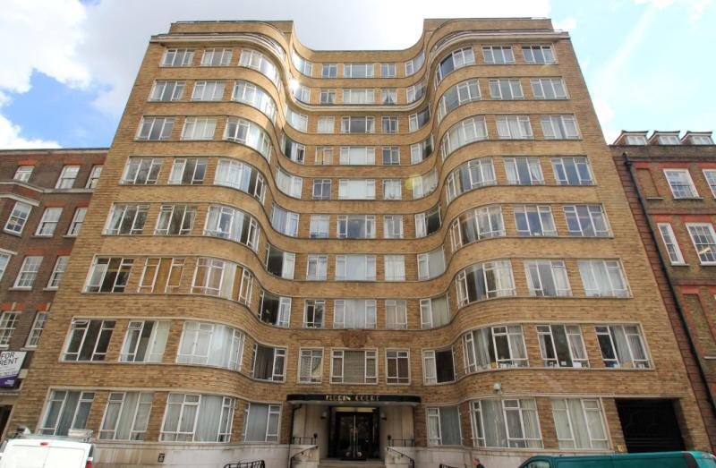
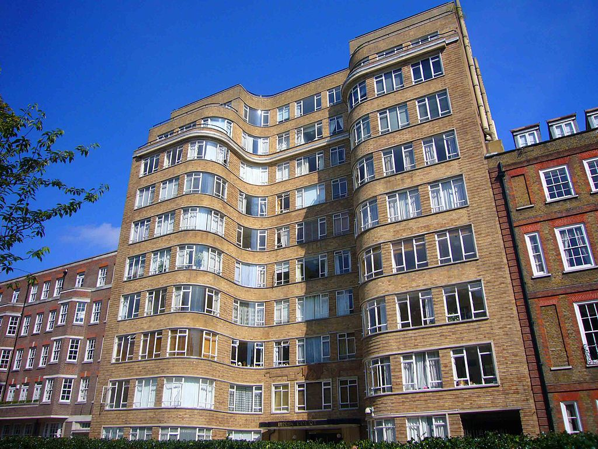
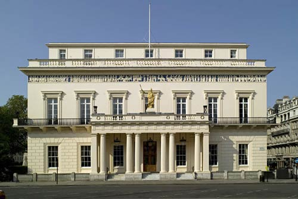
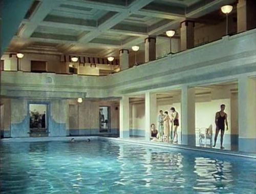
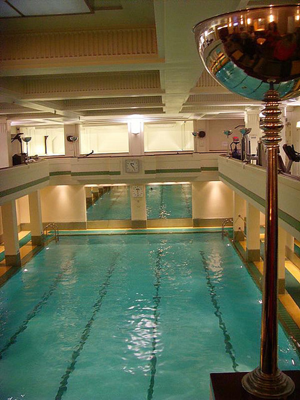

Florin Court in Charterhouse Square is used as Whitehaven Mansions (Poirot's flat).

The building was designed by Guy Morgan & Partners in 1936.

The Athenaeum Club in Pall Mall, London SW1 used as 'Laverton-West's Club'.

The Lansdowne Club pool in Berkeley Square, London W1.

The Art Deco pool with its spectacular up-lights.